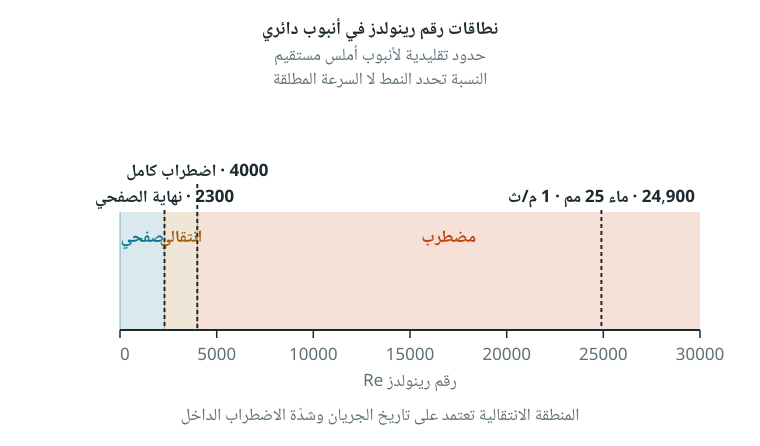

رقم رينولدز
Reynolds Number
مقدار لا بُعد له يساوي نسبة قوى العطالة إلى قوى اللزوجة في الجريان، Re = ρvD/μ. يحدّد نمط الجريان: صفحي حتى 2300 في الأنابيب الدائرية، وانتقالي حتى 4000، ومضطرب فوقها.
رقم رينولدز مقدار لا بُعد له يقيس نسبة قوى العطالة إلى قوى اللزوجة في الجريان. صيغته العامة Re = ρvD/μ، وتُكتب أيضًا Re = vD/ν حين تُستعمل اللزوجة الحركية. القطر D هو الطول المميّز: قطر الأنبوب للجريان الداخلي، وطول الصفيحة أو الوتر للجريان الخارجي، والقطر الهيدروليكي للمقاطع غير الدائرية.
لمّا كان المقدار نسبة، فهو يحدّد أيّ القوتين يغلب. عند السرعات الصغيرة والمقاطع الضيقة تغلب اللزوجة فتُخمد الاضطرابات ويبقى الجريان صفحيًّا. وعند السرعات الكبيرة تغلب العطالة، فتستمر الاضطرابات الناشئة عن خشونة السطح واهتزازات الشبكة ويصبح الجريان مضطربًا.
في الأنابيب الدائرية تُقبل القيم التقليدية الآتية: صفحي حتى 2300، ومنطقة انتقالية بين 2300 و4000، واضطراب كامل فوق 4000. هذه حدود هندسية نموذجية لأنبوب أملس مستقيم، وليست ثوابت فيزيائية كونية.
كيف تعمل الظاهرة؟
تُولَّد الاضطرابات من عدم استقرار طبقات القصّ: أي اضطراب صغير يزيح جسيمًا عن خطه، فإن كانت اللزوجة كافية أعادت قوى القصّ الجسيم إلى مساره وتبدّدت طاقته حرارةً. وإن كانت العطالة أكبر احتفظ الجسيم بزخمه العرضي وكبر الاضطراب بدل أن يخبو. رقم رينولدز يعبّر عن هذا التنافس حسابيًّا: ρvD/μ يزن ضغط العطالة ρv² مقابل إجهاد اللزوجة μv/D، ونسبتهما هي الرقم نفسه. ولذلك لا تكفي السرعة وحدها للحكم: الماء بسرعة 1 m/s صفحي في أنبوب شعري ومضطرب في أنبوب قطره 10 سم.
العلاقة بالأرقام
لماء عند 20 °م (ρ = 998 kg/m³، μ = 1.002×10⁻³ Pa·s) في أنبوب قطره 25 مم وسرعته 1 m/s: Re = 998 × 1 × 0.025 / 1.002×10⁻³ ≈ 24,900، أي اضطراب كامل. السرعة التي يقع عندها الحدّ 2300 في الأنبوب نفسه: v = Re·μ/(ρD) = 2300 × 1.002×10⁻³ / (998 × 0.025) = 0.092 m/s. وللهواء عند 20 °م (ρ = 1.204، μ = 1.81×10⁻⁵) في مجرى قطره 0.1 m وسرعته 5 m/s: Re ≈ 33,300. الحدّ نفسه يقابل رقمًا مختلفًا في كل هندسة، فالرقم لا يُقارن بين أنبوب وصفيحة إلا بعد توحيد الطول المميّز.
مفاهيم متقاربة
يُظنّ أن رقم رينولدز مقياس سرعة أو مقياس اضطراب مطلق. هو نسبة قوى، والرقم المرتفع يعني غلبة العطالة لا سرعة عالية بالضرورة: الزيت الثقيل في أنبوب كبير قد يبلغ 3000 بسرعة أقل من متر في الثانية. والخلط الثاني: نسبة الحدّين 2300 و4000 إلى «الفيزياء»، بينما هما نتيجة تجارب أنابيب أملسة منتظمة؛ مقطع خشن أو مدخل مضطرب يخفض حدّ الانتقال كثيرًا، ومقطع شديد الانتظام قد يبقى صفحيًّا فوق 3000. والثالث: استخدام القطر بدل القطر الهيدروليكي في المقاطع المستطيلة والحلقية، فيغيّر الرقم ويُفسد القرار.
حدود التطبيق
الرقم أداة تصنيف لا تنبؤ كامل: عند 2500 لا يمكن الجزم بأن الجريان صفحي أو مضطرب، بل إن الحالة تعتمد على تاريخ الجريان وشدّة الاضطراب الداخل. وفي الجريان الخارجي تُستبدل 2300 بحدود على Re_x تقارب 5×10⁵ لانتقال الطبقة الحدّية. ولا يكفي رقم رينولدز وحده عند تداخل قوى أخرى: رقم فرود للموجات السطحية في المجاري المفتوحة، ورقم ماخ للانضغاطية، ورقم برانتل لنسب انتشار الحرارة والزخم. كما تتغيّر الخواص مع الحرارة، فيُحسب الرقم عند درجة الحرارة الفيلمية لا عند حرارة السائل البعيد.

| الكمية | القيمة | المصدر |
|---|---|---|
| حدّ نهاية الجريان الصفحي في الأنبوب | 2300 بلا وحدة | [2] |
| بداية الاضطراب الكامل | 4000 بلا وحدة | [2] |
| رقم رينولدز لماء 25 مم عند 1 m/s | 24,900 بلا وحدة | [1] |
| السرعة عند الحدّ 2300 في أنبوب 25 مم | 0.092 m/s | [1] |
| رقم رينولدز لهواء في مجرى 0.1 م بسرعة 5 م/ث | 33,300 بلا وحدة | [1] |
المصادر
- 1 University Physics Volume 1 — 14.7 Viscosity and Turbulence — OpenStax. openstax.org/books/university-physics-volume-1/pages/14-7-viscosity-and-turbulence · اطُّلع عليه 2026-11-16
- 2 Reynolds Number — The Engineering ToolBox. www.engineeringtoolbox.com/reynolds-number-d_237.html · اطُّلع عليه 2026-11-16
استشهد بهذا المصطلح
الصيغتان مبنيتان من بيانات الصفحة نفسها: العنوان والتاريخ ورابط النسخة المنشورة.
رقم رينولدز — Reynolds Number. (2026). ديوان المعرفة — انفراد. https://infiradev.com/diwan/terms/reynolds-number.html
@misc{reynolds-number2026,
title = {رقم رينولدز},
titleaddon = {Reynolds Number},
howpublished = {{ديوان المعرفة — انفراد} — مرجع علمي عربي},
year = {2026},
url = {https://infiradev.com/diwan/terms/reynolds-number.html},
urldate = {2026-11-16},
note = {مراجعة علمية: مراجعة آلية — ديوان المعرفة (روابط المصادر + عقد المحتوى + وجود الرسم) 2026-11-16}
}
راجعه: مراجعة آلية — ديوان المعرفة (روابط المصادر + عقد المحتوى + وجود الرسم) 2026-11-16 · 2026-11-16 · آخر تحديث 2026-11-16